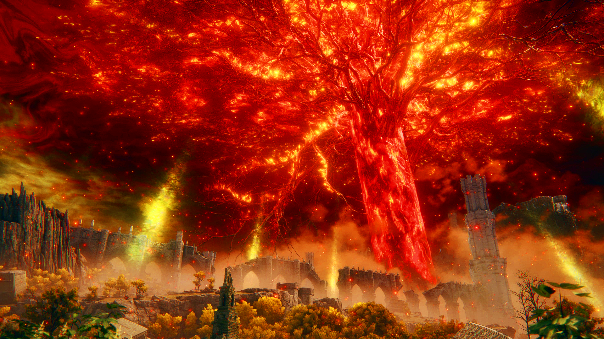
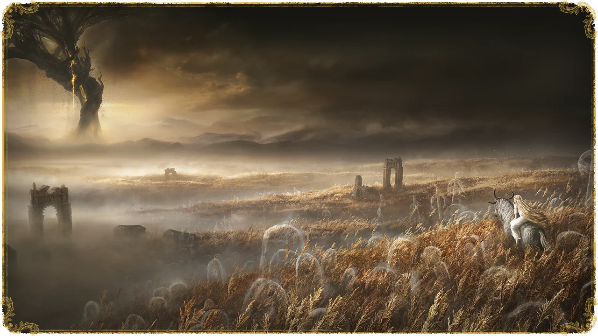

Session VI
Ashes and Old Trails
Reunited in Thornwood Village, the party faces the aftermath of a bloody battle, meets a travelling musician, and finds a promising lead in the search for Orthen’s missing brother.
Every world has a story. Step into yours.
Main Manual Campaigns
Previously On
Session VI
Reunited in Thornwood Village, the party faces the aftermath of a bloody battle, meets a travelling musician, and finds a promising lead in the search for Orthen’s missing brother.
Last Session Recap
The Party
In Memoriam
Those whose journeys ended, but whose names remain part of the story.
Fallen Adventurers
Fallen Figures
Contracts & Objectives
Active assignments, completed contracts, and the party’s growing quest history.
Known Realm
Explore the campaign map and inspect the roads, settlements, regions, and landmarks known to the party.
Campaign Map
People Met Along the Road
Familiar faces, enduring stories. Find someone below and open their portrait to read more.
Campaign Chronicle
Every chapter of the party's story, preserved in order.
The Guests of Grimwood
In Memoriam
No fallen adventurers or important figures have been recorded for this chronicle.
People of the Manor
Manor Host

Few had heard the name Vane Grimwood until recent years.
Then, seemingly from nowhere, came the estate, the wealth, and the title. Grimwood's name began appearing among merchants and nobility alike, accompanied by stories of extravagant purchases, valuable holdings, and a fortune whose true extent remains a matter of speculation.
Where this sudden prosperity came from is uncertain. Some attribute it to shrewd investments, others to distant inheritance or simple good fortune. The Baron himself has offered little explanation.
Those who have met Baron Vane Grimwood describe a tall, imposing man with long black hair swept neatly back, distinguished by a single streak of silver. He is unfailingly composed and courteous, though there is something unusually intense about his gaze. Even when smiling warmly, he has a habit of making people feel as though they are being carefully studied.
Guests of Note

Vice Emberclaw built his fortune beneath the Ironpeak Mountains, where his mining company extracts iron, coal, and smaller quantities of precious metals. His wealth has earned him a place among respectable society, though older noble families sometimes regard him more as a businessman than a true aristocrat.
Vice is broad and imposing, with dull black scales and several old scars across his hands and snout. Unlike many of the guests, he dresses practically: a well-tailored dark coat, heavy boots, and only enough jewelry to demonstrate that he can afford it.
He is blunt, practical, and difficult to impress. Vice dislikes excessive ceremony and has little patience for nobles who inherited everything they own. He respects people who work for their success, making adventurers considerably more interesting to him than most of Grimwood's guests.

Charlotte Fleaklight is the widow of a prominent nobleman from the Verdant Reach, a man remembered as one of the region's strongest advocates for druidic rights and protections. His considerable fortune funded sanctuaries, legal campaigns, protected woodland, and efforts to curb the exploitation of druidic communities.
Following his death, that fortune passed almost entirely to Charlotte.
Unfortunately, Charlotte couldn't care less about his life's work.
Since inheriting his estate, she has steadily withdrawn funding from her husband's causes and redirected the money toward lavish parties, expensive clothing, exotic luxuries, travel, and whatever happens to amuse her that month. She rarely speaks badly of her late husband; she simply considers his ideals an unfortunate waste of perfectly good money.

Empior Windveil is one of the most influential figures associated with the prestigious Royal Academy of Valemere. Though not primarily known as a scholar himself, his extensive financial contributions have funded new wings, research programs, scholarships, and the acquisition of rare magical texts and artifacts.
More importantly, Windveil holds a powerful position on the Academy's admissions council.
Few students enter the Academy without his approval.
Applicants may spend years studying for the Academy's examinations, but exceptional grades alone are rarely enough. Windveil believes that the Academy's students must possess more than intelligence—they must demonstrate ambition, discipline, composure, and the potential to someday enhance the Academy's reputation.
This has made an audience with Empior nearly as intimidating as the entrance examinations themselves.

Adam Newport is one of the most successful independent porters operating from the Emberford Docks. For decades, his ships have carried cargo between distant ports and the markets of Valemere, earning him both considerable wealth and a reputation for getting valuable goods where they need to go.
Spices, medicines, foreign textiles, enchanted materials, rare wines and countless mundane necessities have passed through Newport's hands. Many merchants throughout Valemere owe at least some portion of their success to his trade routes.
But there is one possession Adam values above his fortune:
The Righteous Anne.
His ship is his pride and joy. Ask Adam about his wealth and he'll shrug. Ask about The Righteous Anne and you'll struggle to stop him talking. He knows every plank, sail and repair the vessel has received and becomes genuinely offended if anyone refers to her as simply "a boat."
Despite his success, Adam retains much of the personality of a working sailor. He is boisterous, sociable, outspoken and somewhat rough around the edges, making him stand out considerably among Grimwood's carefully mannered aristocratic guests.
One-Shot Chronicle
The session record will begin once Into the Grimwood Manor is played.
Created by Mikael Delia
Campaign Premise
Across three vastly different universes, seven individuals find themselves bound by an extraordinary phenomenon known as the Shattering. From the treacherous seas of the Pirate World to the technologically advanced streets of Night City and the magical lands of Elysia, their lives become intertwined by forces beyond their understanding.
Each bears a mysterious arcane scar, a mark that grants them the ability to defy death itself. When tragedy strikes, time can rewind, allowing them to change their fate. Yet this extraordinary gift comes at a terrible cost. Every revival weakens the boundaries separating the worlds, bringing reality closer to complete collapse.
Their journey leads them to discover the existence of a shattered medallion, its fragments scattered across the three universes. As they search for these pieces, they encounter powerful corporations, ancient magical civilizations, mysterious merchants, forgotten gods, and individuals whose ambitions threaten the very fabric of existence.
But beneath the chaos lies a far older mystery.
Long before their arrival, seven champions stood against Ithilia, a goddess consumed by her desire to rule the realms. Their battle reshaped existence and gave rise to the world now known as Elysia. History has forgotten their names, yet the pattern of their existence appears to be repeating.
As the boundaries between worlds deteriorate, the seven adventurers must confront an increasingly devastating truth: the very power keeping them alive may be responsible for destroying everything around them.
Every death presents a choice. Every revival carries consequences. And every decision brings them closer to discovering whether they are destined to save reality or repeat the catastrophe that once destroyed it.
For the world has broken before. And this time, it may not survive being rewritten.
Across the treacherous seas
Through the streets of Night City
Within the magical lands of Elysia

A chronicle of ash & grace
Created by Mikael Delia
Campaign Premise
Vyke, he who embraced the Frenzied Flame (the Lord of Chaos) has begun to unravel reality itself. The Erdtree is ash, Leyndell is fire-choked rubble, and madness spreads like a plague.
Melina, broken yet defiant, gathers the last champions — powerful Tarnished and forgotten Lords — and hurls them on a desperate mission:
Hunt down and slay the Lord of Frenzied Flame before the world is consumed.
Seven players · One desperate mission
Hover over a portrait to glimpse another form. Open a character to switch forms with a click.
All seven characters added
Beyond the Frenzied Flame

Beneath the Scadutree
Created by Mikael Delia
A sequel to Beyond the Frenzied Flame
“Where the light of gold does not reach,
the flames of a forsaken lord still burn.”
I · Campaign Premise
The Realm of Shadow
Beyond the sight of the Erdtree lies a forgotten realm, concealed from the Lands Between and erased from history. A land beneath the towering Scadutree, scarred by an ancient and merciless crusade.
Long ago, Messmer the Impaler, forsaken son of Queen Marika, led his armies through the Realm of Shadow, bringing fire and slaughter upon its inhabitants. Kingdoms fell, civilizations crumbled, and countless souls perished beneath his crimson banners.
Yet the passage of time has brought no peace.
Whispers of unrest spread across the land. Forgotten battlefields stir, settlements fall silent, and the flames of Messmer's crusade threaten to consume what little remains.
Something has changed.
Now, warriors, wanderers, and outcasts find themselves drawn into this forsaken realm. Some seek vengeance, others redemption, forgotten knowledge, or glory. Whatever their purpose, their paths shall intertwine beneath the Scadutree.
Their journey will lead through ruined kingdoms, ancient strongholds, and lands haunted by the sins of gods.
And at the end of that road awaits a demigod.
Messmer the Impaler.
May the fallen find solace,
and may the forsaken find their rest.